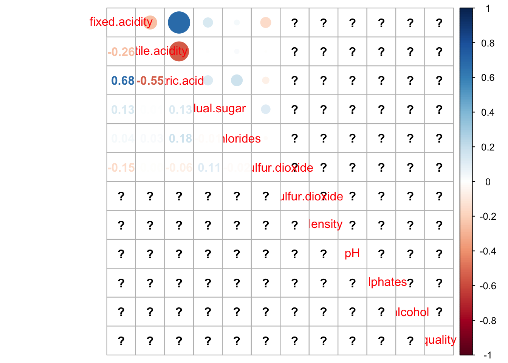

People tend to be ‘practical’ when it comes to saving time. Whether
it’s ordering online so that you don’t have to go anywhere, or reading a
book summary instead of diving into the book - we feel satisfied,
efficient and proud, further spending saved time on our hobbies or other
things that bring us joy.
Same goes for learning. Even those psyched over a subject can still
feel the urge to take a shortcut. In Poland we sometimes say that
laziness is the driving force of mankind. Perhaps if humans were not
lazy, we wouldn’t feel a push towards change.
Having that in mind, you probably figured out that the answer to the question of this section will be - it depends. In the same way that a 3in1 shampoo won’t be the best choice for our hair in the long run, Python cannot be a all-in-one programming language.
We’ll go over the possibilities of each language and discuss useful packages.
Interestingly, you can also do machine learning in other languages,
like C/C++ or Java. Actually, languages like Lua, Lisp and Haskell offer
quite a similar set of possibilities as Python and R, however never went
into fashion. Other possibility is Julia, a Jupyter notebook option,
which works with the speed of C, on the basis of Python/R scripts.
In the end, it all goes down to preference, although many indicate
that R was created with having statistics in mind, hence seems to be
more versatile and fit for the job. However, Python packages for
statistics and machine learning are being developed each year.
# Importing the libraries
import numpy as np
import matplotlib.pyplot as plt
import pandas as pd
# Importing the dataset
dataset = pd.read_csv('your_data_set.csv')
# Access specific rows and columns (change the numbers)
X = dataset.iloc[:, :-1].values
y = dataset.iloc[:, 4].values
# Encoding the Independent Variable
from sklearn.preprocessing import LabelEncoder, OneHotEncoder
labelencoder_X = LabelEncoder()
X[:, 3] = labelencoder_X.fit_transform(X[:, 3])
onehotencoder = OneHotEncoder()
a = onehotencoder.fit_transform(X[:,[3]]).toarray()
# Avoid the dummy variable Trap
a=a[:,1:]
# Add encoded data into X
X = X[:,:3]
X=np.concatenate((X, a),axis=1)
# Split the dataset into the Training set and Test set
from sklearn.model_selection import train_test_split
X_train, X_test, y_train, y_test = train_test_split(X, y, test_size = 0.2, random_state = 0)
# Feature Scaling
"""from sklearn.preprocessing import StandardScaler
sc_X = StandardScaler()
X_train = sc_X.fit_transform(X_train)
X_test = sc_X.transform(X_test)
sc_y = StandardScaler()
y_train = sc_y.fit_transform(y_train)"""
# Linear Model
from sklearn.linear_model import LinearRegression
regressor=LinearRegression()
regressor.fit(X_train,y_train)
y_pred=regressor.predict(X_test)
# add column of 1's in X
import statsmodels.formula.api as sm
X=np.append(arr=np.ones((50,1)).astype(int),values=X,axis=1)
import statsmodels.api as sm1
#backward Elimination
X_opt=np.array(X[:,[0,1,2,3]],dtype = float)
regressor_OLS=sm1.OLS(endog=y,exog=X_opt).fit()
regressor_OLS.summary()
#forward selection
X_opt2=np.array(X[:,[0]],dtype = float)
regressor_OLS2=sm1.OLS(endog=y,exog=X_opt2).fit()
regressor_OLS2.summary()
#Visualizing the test set result
from matplotlib.colors import ListedColormap
x_set, y_set = x_test, y_test
x1, x2 = nm.meshgrid(nm.arange(start = x_set[:, 0].min() - 1, stop = x_set[:, 0].max() + 1, step =0.01),
nm.arange(start = x_set[:, 1].min() - 1, stop = x_set[:, 1].max() + 1, step = 0.01))
plm.contourf(x1, x2, classifier.predict(nm.array([x1.ravel(), x2.ravel()]).T).reshape(x1.shape),
alpha = 0.75, cmap = ListedColormap(('red','green' )))
plm.xlim(x1.min(), x1.max())
plm.ylim(x2.min(), x2.max())
for i, j in enumerate(nm.unique(y_set)):
plm.scatter(x_set[y_set == j, 0], x_set[y_set == j, 1],
c = ListedColormap(('red', 'green'))(i), label = j)
plm.title('MLR algorithm(Test set)')
plm.xlabel('Label1')
plm.ylabel('Label2')
plm.legend()
plm.show()
An extension to MLR, of which an interesting description is provided
here.
Multivariate regression: several dependent variables with different variances Multiple regression: only one dependent variable y
Let’s try to analyze a particular data set, from a published paper
regarding wine:
P. Cortez, A. Cerdeira, F. Almeida, T. Matos and J. Reis. Modeling
wine preferences by data mining from physicochemical properties. In
Decision Support Systems, Elsevier, 47(4):547-553, 2009.
Wine variants of Portuguese “Vinho Verde” are analysed with regards to their chemical properties. Finally, we are interested how these chemical properties influence wine quality.
These are our independent variables:
1 - fixed acidity 2 - volatile acidity 3 - citric acid 4 - residual sugar 5 - chlorides 6 - free sulfur dioxide 7 - total sulfur dioxide 8 - density 9 - pH 10 - sulphates 11 - alcohol
This is our dependent variable:
12 - quality (score between 0 and 10)
library(dplyr)
library(tibble)
library(tidyr)
library(ggplot2)
library(corrplot)
library(car)
library(caret)
# if file does not exist, download it first
file_path <- "./data/winequality-red.csv"
if (!file.exists(file_path)) {
dir.create("./data")
url <- "https://archive.ics.uci.edu/ml/machine-learning-databases/wine-quality/winequality-red.csv"
download.file(url = url,
destfile = file_path)
}
df <- read.csv(file_path, sep = ";")
## fixed.acidity volatile.acidity citric.acid residual.sugar chlorides free.sulfur.dioxide total.sulfur.dioxide density
## Min. : 4.600 Min. :0.1200 Min. :0.0000 Min. : 0.900 Min. :0.01200 Min. : 1.00 Min. : 6.00 Min. :0.9901
## 1st Qu.: 7.400 1st Qu.:0.3900 1st Qu.:0.1200 1st Qu.: 1.900 1st Qu.:0.07200 1st Qu.: 7.00 1st Qu.: 22.00 1st Qu.:0.9962
## Median : 8.300 Median :0.5100 Median :0.2850 Median : 2.300 Median :0.08100 Median :13.00 Median : 38.00 Median :0.9972
## Mean : 8.703 Mean :0.5226 Mean :0.2963 Mean : 2.584 Mean :0.08977 Mean :15.28 Mean : 47.69 Mean :0.9972
## 3rd Qu.: 9.800 3rd Qu.:0.6300 3rd Qu.:0.4700 3rd Qu.: 2.700 3rd Qu.:0.09300 3rd Qu.:21.00 3rd Qu.: 63.00 3rd Qu.:0.9982
## Max. :15.900 Max. :1.3300 Max. :1.0000 Max. :15.500 Max. :0.61100 Max. :68.00 Max. :289.00 Max. :1.0032
## NA's :1 NA's :1 NA's :1 NA's :1 NA's :1
## pH sulphates alcohol quality
## Min. :2.740 Min. :0.3300 Min. : 8.40 Min. :3.000
## 1st Qu.:3.190 1st Qu.:0.5600 1st Qu.: 9.50 1st Qu.:5.000
## Median :3.300 Median :0.6200 Median :10.00 Median :6.000
## Mean :3.296 Mean :0.6666 Mean :10.31 Mean :5.643
## 3rd Qu.:3.390 3rd Qu.:0.7350 3rd Qu.:10.90 3rd Qu.:6.000
## Max. :3.900 Max. :2.0000 Max. :14.90 Max. :8.000
## NA's :1 NA's :1 NA's :1 NA's :1There is a way to plot all multivariate correlations (although visually not so appealing). It also does not work, if there are many dimensions. You need to subset the results.
We create our own visualisation, that is much better to read.
## Warning: `as.tibble()` was deprecated in tibble 2.0.0.
## ℹ Please use `as_tibble()` instead.
## ℹ The signature and semantics have changed, see `?as_tibble`.
## This warning is displayed once every 8 hours.
## Call `lifecycle::last_lifecycle_warnings()` to see where this warning was generated.df_gather <- df_scaled %>%
gather(key = "variable", value = "value", 1:11) %>%
mutate(variable = as.factor(variable))
g <-ggplot(df_gather, aes(x = quality, y = value))
g <- g + facet_wrap( ~ variable)
g <- g + geom_point()
g <- g + geom_smooth(se = F, method = "lm")
g## `geom_smooth()` using formula = 'y ~ x'## Warning: Removed 11 rows containing non-finite values (`stat_smooth()`).## Warning: Removed 11 rows containing missing values (`geom_point()`).Assuming there is a linear relationship between variables, a correlation matrix is calculated.
cor_vals <- cor(df) %>%
as.data.frame() %>%
dplyr::mutate(Var1 = rownames(.)) %>%
gather(key = "Var2", value = "Corr", 1:12)
g <- ggplot(cor_vals, aes(x = Var1, y = Var2, fill = Corr))
g <- g + geom_tile()
g <- g + scale_fill_gradient2(low = "blue", high = "red", mid = "white",
midpoint = 0, limit = c(-1,1), space = "Lab",
name="Pearson\nCorrelation")
g <- g + theme(axis.text.x = element_text(angle = 90, hjust = 1))
gAlso here we can make use of a simpler alternative: corrplot().

This shows in the upper right triangle correlations as circles. Size corresponds to absolute value of correlation. We are looking for large circles, because they indicate high absolute correlations. The colors correspond to positive or negative correlations. Positive correlation between X and Y means, that an increase of X leads to an increase in Y. A negative correlation between X and Y means, that an increase of X leads to a decrese in Y.
Model Setup
We create a model with lm().
##
## Call:
## lm(formula = "quality ~ .", data = df)
##
## Residuals:
## Min 1Q Median 3Q Max
## -2.66389 -0.37968 -0.07077 0.47933 1.99549
##
## Coefficients:
## Estimate Std. Error t value Pr(>|t|)
## (Intercept) 5.217e+01 2.510e+01 2.079 0.0379 *
## fixed.acidity 5.215e-02 3.133e-02 1.665 0.0963 .
## volatile.acidity -1.017e+00 1.444e-01 -7.044 3.31e-12 ***
## citric.acid -2.670e-01 1.764e-01 -1.514 0.1303
## residual.sugar 3.916e-02 1.975e-02 1.983 0.0477 *
## chlorides -1.521e+00 4.911e-01 -3.097 0.0020 **
## free.sulfur.dioxide 2.830e-03 2.765e-03 1.024 0.3061
## total.sulfur.dioxide -3.766e-03 8.823e-04 -4.268 2.14e-05 ***
## density -4.889e+01 2.563e+01 -1.907 0.0567 .
## pH -2.374e-01 2.294e-01 -1.035 0.3009
## sulphates 7.372e-01 1.295e-01 5.694 1.60e-08 ***
## alcohol 2.763e-01 3.094e-02 8.929 < 2e-16 ***
## ---
## Signif. codes: 0 '***' 0.001 '**' 0.01 '*' 0.05 '.' 0.1 ' ' 1
##
## Residual standard error: 0.6487 on 1079 degrees of freedom
## (1 observation deleted due to missingness)
## Multiple R-squared: 0.3717, Adjusted R-squared: 0.3653
## F-statistic: 58.03 on 11 and 1079 DF, p-value: < 2.2e-16We see which parameters are statistically relevant, and what the parameter values are.
Predictions
Now, we can create predictions.
Predicted values and true values are visualised as correlation plot. A linear regression line is drawed for reference. Also a black line is drawed as reference for a perfect regression, in which predicted values and actual values are identical.
g <- ggplot(df, aes(y = quality, x = quality_pred))
g <- g + geom_point(alpha = .1)
g <- g + geom_smooth(method = "lm", se = F)
g <- g + geom_abline(slope = 1, intercept = 0)
g <- g + ylab ("Actual")
g <- g + xlab ("Prediction")
g <- g + ggtitle ("Prediction vs. Actual")
g## `geom_smooth()` using formula = 'y ~ x'## Warning: Removed 1 rows containing non-finite values (`stat_smooth()`).## Warning: Removed 1 rows containing missing values (`geom_point()`).Predicted regression line nearly matches vertical line. This means there is hardly any bias. But the variation is quite high.
Model Performance
We calculate adjusted R-squared to analyse model performance. R-squared is a measure that indicates how much of variability in data is explained by the model.
## [1] 0.3653133Only 35 % of variability in the data is explained by the model. That is rather poor, so we should think about some more complex model.
You should use adjusted R-squared, because R-squared always increases when more explanatory variables are added to a model. Its value will always be less or equal to R-squared.
Model quality is far from perfect, but reasonably good.
Error Independence
The residuals of the model should be normally distributed. We can check this based on a QQ-plot. We extract the residuals and visualise it with qqnorm(). qqline() adds a reference line. We assume linearity if all points are on this line.
## [1] 833 653
Pick one of the following numbers to active the link to a specific
publication, using MLR. Try to describe that publication in a short
paragraph, define why MLR was useful in that particular case and name an
additional (chemistry/biology-related) problem that could be solved in a
similar manner (with MLR).
(!!!!!!!!!!!!!!!!!!!!) Additionally, find a publication on a similar
topic (like the same type of disease data, or the same enzyme regarded
etc.) using MULTIVARIATE regression and explain how different can the
approaches be and how differently they allow us to look at that
scientific problem.
Publications to choose from for MLR:
1, 2, 3, 4, 5, 6, 7, 8, 9, 10, 11,12, 13, 14, 15, 16, 17, 18
Good examples of using MLR with description:
Use one of those description in order to create your own script for
MLR, either Python or R, whatever you prefer (choose only one!!). If
it’s still problematic for you, go further to GitHub examples and finish
your script in Exercise 3, after you’re done with Exercise 2.
Now, go through 1 GitHub MLR practical example and describe it in a
paragraph.
https://github.com/Avinav09/Multiple-Linear-Regression/tree/master
https://github.com/pranavseth/Multiple-Linear-Regression-in-R
https://github.com/jordancheah/MultipleLinearRegression-HackerRankPredictHousePrices
https://github.com/shivangidx/Multiple-Linear-Regression-Analysis
https://github.com/carpentries-incubator/multiple-linear-regression-public-health
https://github.com/shivanshjoshi28/Machine-Learning-project-1
https://github.com/jasonx1011/temperature-prediction
https://github.com/acmyers/chillerMLR
https://github.com/mnassrib/multiple-linear-regression
https://github.com/DeltaOptimist/Linear_Regression_Simple_Multiple_Using_R
https://github.com/allisonhorst/esm-206-lab-9/blob/master/lab_9_template.Rmd
https://github.com/mahesh147/Multiple-Linear-Regression/blob/master/multiple_linear_regression.py
https://github.com/Ashleshk/Machine-Learning-Stanford-Andrew-Ng
https://github.com/mrqasimasif/Multiple-Linear-Regression-CO2-Emission-Prediction
https://github.com/datasciencewithsan/Multiple-Linear-Regression
https://github.com/NohaWaly/MultipleLinearRegression/blob/master/MultipleLinearRegression.py
https://github.com/Bidhisha24/Multiple-Linear-Regression-Model-Checking-and-Diagnostics
Create your own script for MLR based on the examples and further use it on a data set of your choosing (it can be a recycled data set - the one you already used before during classes - ours or others).
Send finished exercises (Word file+code file or Jupyter notebook or Rmarkdown) to my email: klaudia.chmielewska@ug.edu.pl with the Title format: “DCH2_Name_Class3” (DCH = Digital Chemistry)
Klaudia Chmielewska
See you in the next lesson!